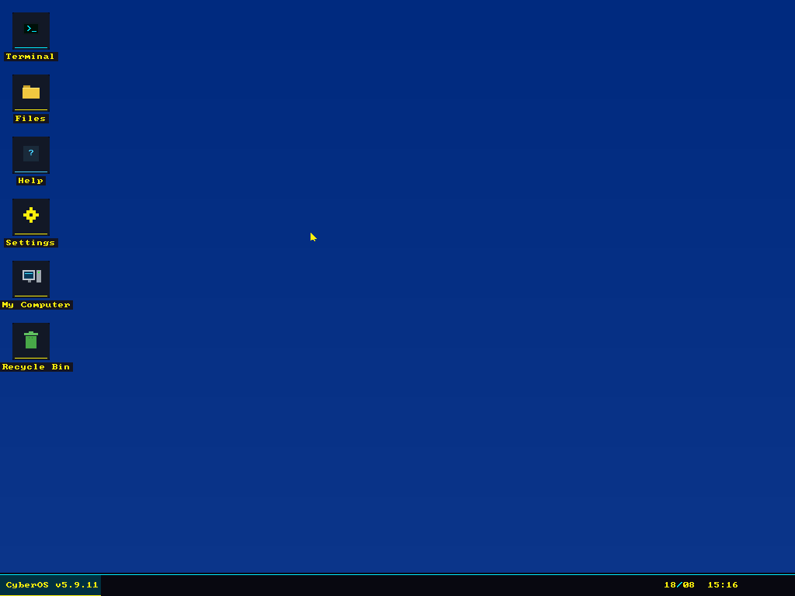
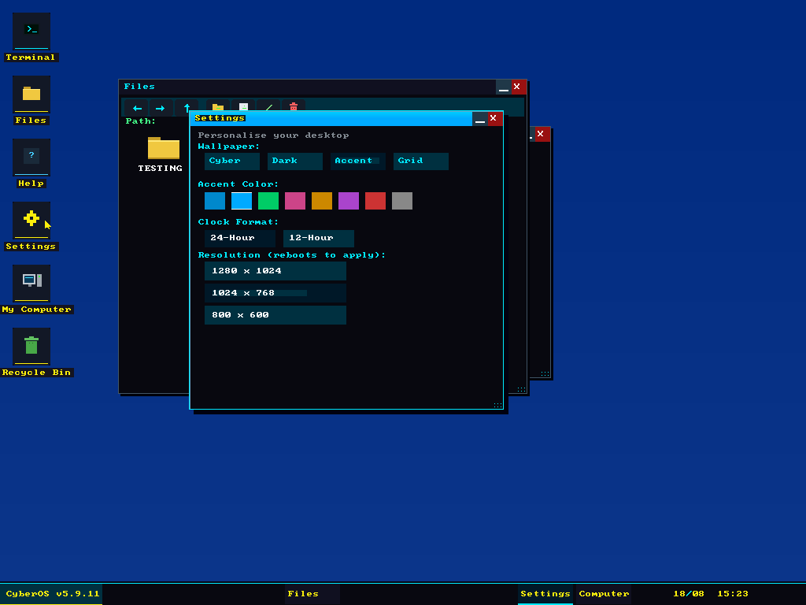
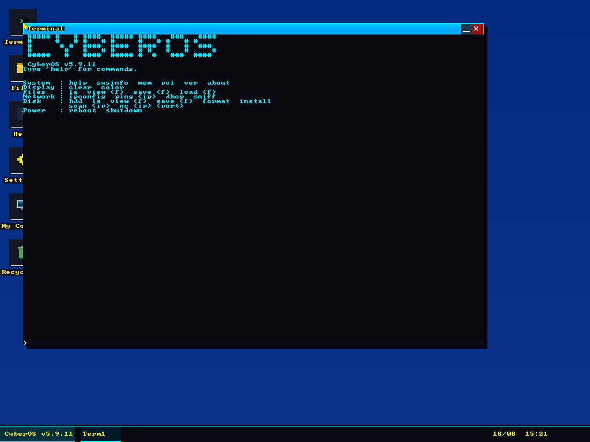

A 32-bit operating system written from scratch in assembly: bootloader, kernel, windowing system, filesystems and a network stack. No libraries, no toolchain beyond NASM.

CyberOS boots from a 1.44 MB floppy image into a 1024×768 32-bit graphical desktop. Everything on screen, from the window manager and the icons to the font rendering and the mouse cursor, is drawn by hand-written assembly into a linear framebuffer. There is no libc, no compiler, and nothing borrowed from an existing kernel.
16,829 lines of NASM in the stage 3 kernel, plus 286 in the stage 2
loader.
60,424 bytes for the assembled kernel, at 92% of its 128-sector load
budget. Size is a live constraint on this project, not an afterthought.
512 bytes for stage 1, which is all a boot sector gets.
Three stages, because the first one has 512 bytes to work with and that is nowhere
near enough.
Stage 1 lives in the boot sector at LBA 0. Its whole job is to pull
stage 2 off the disk and jump to it.
Stage 2 sits at LBA 1. It queries VESA BIOS Extensions for a 1024×768
32-bit mode and a linear framebuffer, loads the kernel from LBA 9, sets up the GDT,
switches the CPU from 16-bit real mode into 32-bit protected mode, and hands over.
Stage 3 is the kernel: interrupt handling, memory, PS/2 keyboard and
mouse drivers, the framebuffer graphics layer, the window manager, two filesystem
drivers, an ATA disk driver, an RTL8139 network driver and a TCP/IP stack.

A real window manager rather than a full-screen menu: overlapping windows with correct z-ordering, draggable title bars, minimise and close buttons, resize grips, and a taskbar that tracks what is open. Clicking a window raises it and repaints only what needs repainting.
The settings panel is genuinely wired up: wallpaper themes, an accent colour that propagates through the whole UI, 12 or 24 hour clock, and a resolution switch that takes effect on the next boot because the mode is negotiated with VESA in stage 2.

The terminal has command history, and the command set is the honest measure of how much
of the machine the kernel actually drives:
System. sysinfo, mem, pci,
ver, about. pci walks the PCI configuration space
and enumerates real devices.
Files. ls, view, save,
load, against FAT12 on the floppy and FAT32 on the hard disk.
Network. ifconfig, ping, dhcp
and sniff. There is an RTL8139 driver, an ARP and IP implementation, ICMP,
a DHCP client that really does obtain a lease, and a packet sniffer.
Disk. hdd, format and install.
It can format a FAT32 volume and install itself to the hard disk.
Power. reboot, shutdown.
In July 2026 I ran a full security audit against the CyberOS source, the same way I would approach any other codebase, except that this one had no libraries to hide behind and I had written every line of it. It found 3 critical, 6 high, 8 medium and 9 low findings. All are fixed.
The critical three were memory and filesystem corruption:
C1. A buffer overflow opening any floppy file larger than 1 KB.
C2. fat_next returned garbage cluster numbers, so deleting
a file corrupted the on-disk FAT.
C3. load and view walked random cluster chains
for anything over 512 bytes.
Every fix was assembled, booted headless in QEMU and exercised through the real UI (file manager, terminal, menus, network) with a screenshot at each step. The kernel came out of it smaller: 61,041 bytes down to 60,424, because roughly 720 lines of dead code went out while about 500 lines of bounds checks came in. The pre-audit source and floppy image are kept for rollback.
Because everything above the hardware is normally somebody else's abstraction, and the only way to find out what those abstractions are actually doing is to go without them. Writing a filesystem makes you understand why file corruption happens. Writing a network stack makes you understand why parsers are where the bugs live. I break into systems for a living, and building one from the boot sector up has taught me more about how they fail than any amount of reading.